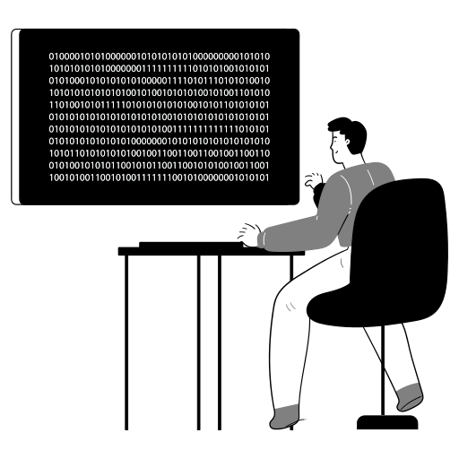

Practical, Data-Driven Software Solutions
I am a Software Engineer and BSCS student at Iqra University focused on turning concepts into working prototypes and high-performance applications, combining programming, algorithmic thinking, data, and machine learning to tackle complex challenges.

Syed Muhammad Arham
Software Engineer
I’m a Software Engineer and BSCS student at Iqra University focused on building practical, data-driven software solutions. I enjoy turning ideas into working prototypes and real applications, combining programming, algorithmic thinking, data, and problem-solving to tackle real-world challenges. I’m comfortable taking projects from concept → prototype → development → testing → deployment, while continuously improving performance, usability, and reliability.
BS Computer Science (2024 to 2028)
Iqra University, Karachi, Pakistan
Malir, Karachi, Pakistan
Available for Onsite & Remote Opportunities
Clean Architecture & Modularity
Scalable backends, reliable data models, responsive interfaces
Currently expanding expertise in:
Particularly interested in the intersection of FinTech, Artificial Intelligence, IoT, Quantitative Finance, Algorithmic Systems, Real-Time Technologies, and intelligent data-driven applications.
Open to Software Engineering, AI/ML, Data Science, and FinTech opportunities and collaborations.
Engineering reliable, scalable software with algorithmic rigor and machine learning.
Developing decision intelligence systems for FMCG media spend allocation using machine learning, K-Means clustering, fuzzy logic, statistical analysis, and Streamlit for data-backed budget optimization.
Building software with Python, C++, Java, JavaScript, SQL, APIs, and databases. Creating high-throughput REST APIs with FastAPI and Flask connected to relational and NoSQL databases.
Developing Machine Learning models, predictive systems, data pipelines, and analytics applications with Scikit-learn, validated via cross-validation and deployed for live inference.
Applying DSA, OOP, algorithmic thinking, automation, and real-time data processing to solve complex problems with a focus on clean architecture, performance, and scalability.
Proven technologies and tools utilized across production and academic applications.
Data-driven applications, machine learning systems, and robust software architectures.
ML decision intelligence platform for FMCG advertising budget optimization. Incorporates K-Means clustering, fuzzy logic inferencing, and statistical distributions deployed on Cloudflare Workers & Streamlit for media spend planning.
AI/ML platform forecasting student academic outcomes. Engineered with Scikit-learn predictive models, interactive Chart.js visualization, high-speed FastAPI backend services, and secure Supabase database persistence.
ML prediction platform determining match win probabilities from historical and live tournament statistics. Built using Flask, Scikit-learn, and database schema architecture in Microsoft SQL Server & Supabase.
Automated Linux server health and resource monitoring application. Collects CPU, disk, memory, and process metrics, generates automated system health reports, and dispatches email notifications upon threshold breaches.
Desktop management applications built in Java (JavaFX GUI) and C++. Implements OOP design patterns, user account roles, transaction recording, and file handling for data persistence.
Web utilities, user interfaces, and early development milestones.
Open for Software Engineering, AI/ML, Data Science, and FinTech roles, internships, and collaborations.
syedarhamreal@gmail.com
Send Messagelinkedin.com/in/syedmuhammadarham
Connect on LinkedIngithub.com/SMArham
Explore Repositories© 2026 Syed Muhammad Arham. All rights reserved.